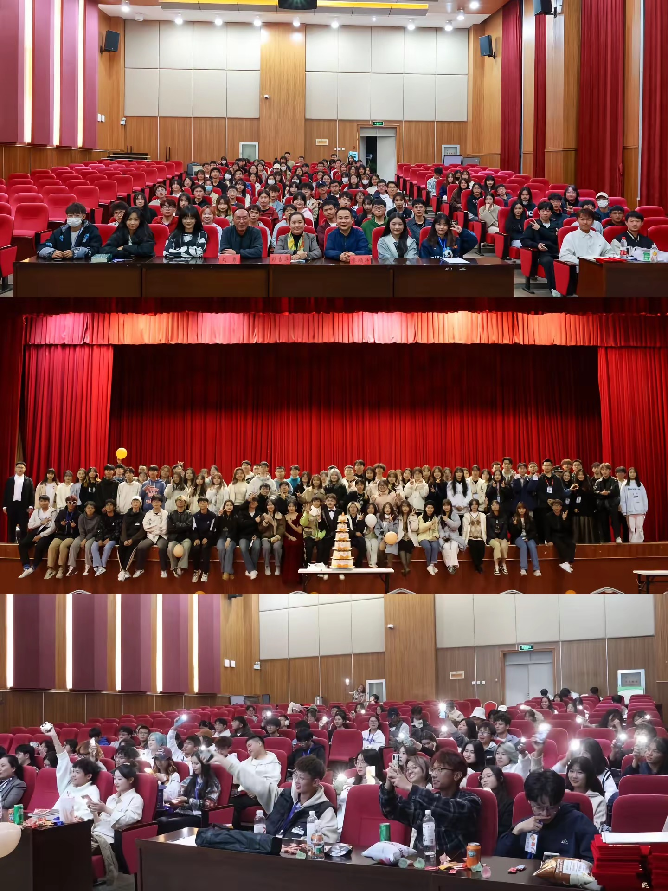
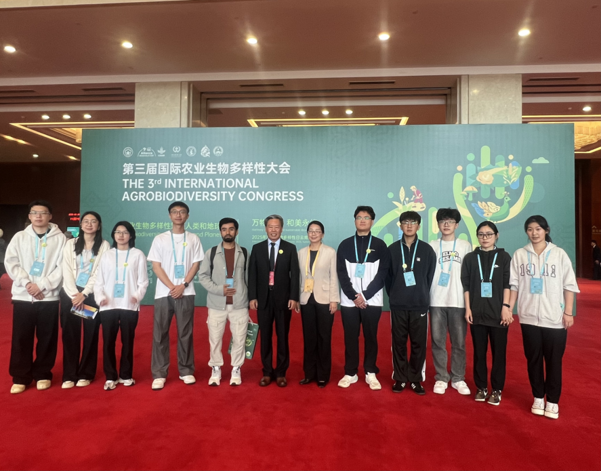
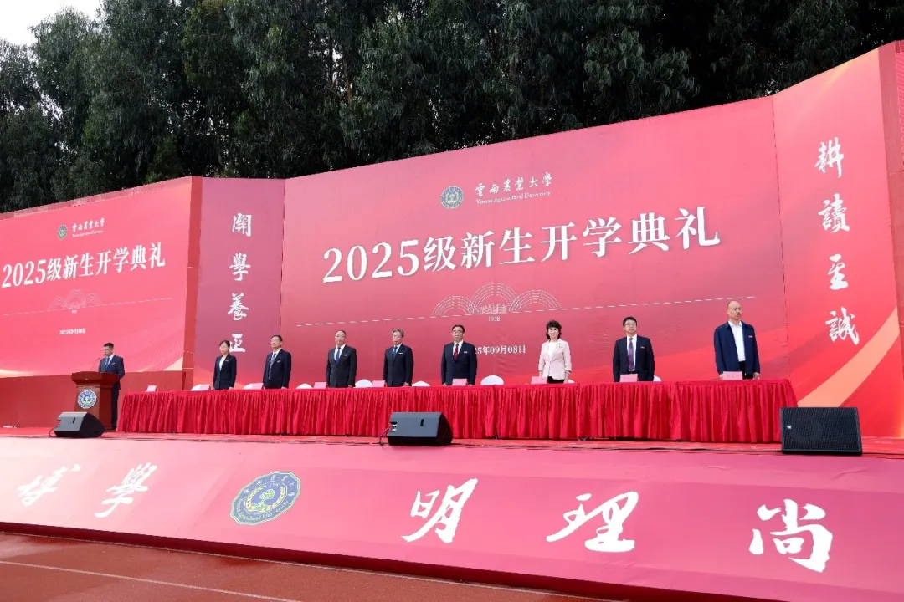
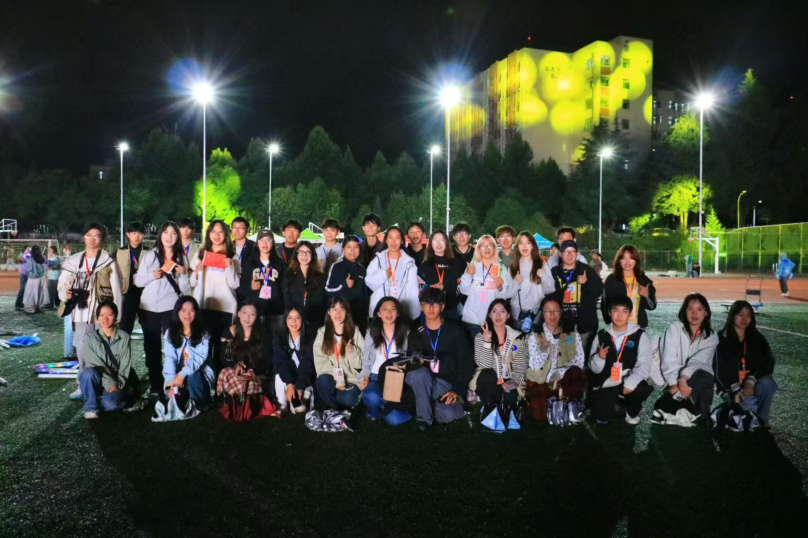
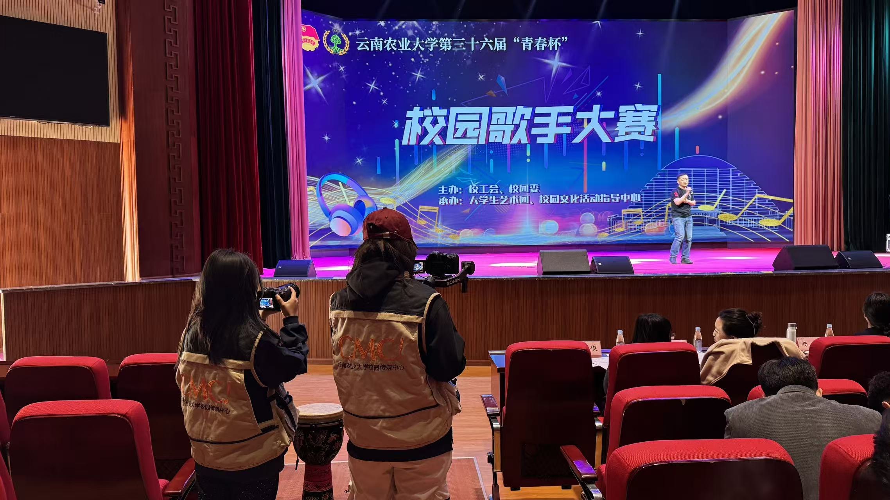
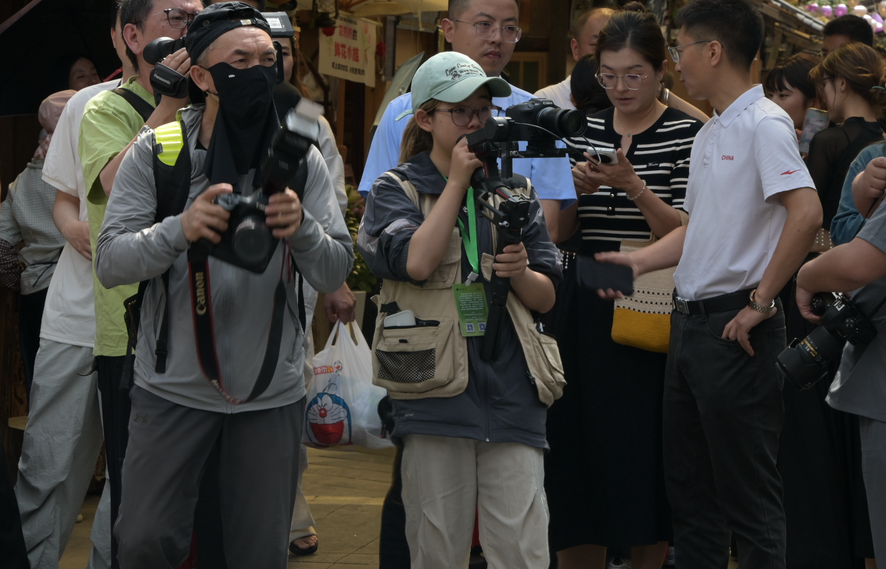
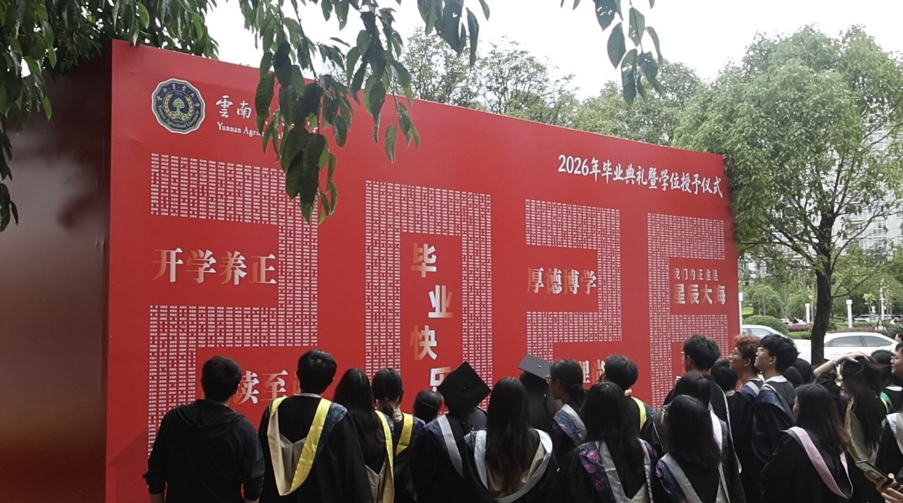

运营部
OPERATIONS
负责学校官方账号运营、图文编辑排版、内容策划推送，挖掘校园热点并产出优质推文。

ABOUT
以镜头记录校园
用传播连接师生
云南农业大学校园传媒中心（CMC）成立于 2014 年 11 月，是由云南农业大学宣传部主管并领导的校级社团组织。
中心以传递校园资讯、繁荣校园文化、服务广大师生为宗旨，长期开展校园新闻采编、新媒体内容创作、校园影像纪实、校园活动宣传等工作。
近年来，社团围绕校园文化宣传主线持续深耕内容传播，统筹运营学校官方微信公众号、官方抖音号、官方微博号，形成多平台协同运营，图文、音频、视频多元产出的校园传媒特色。
未来，中心将继续扎根校园一线，挖掘鲜活校园故事，创新新媒体传播形式，用心讲好云农故事，搭建温暖高效的校园信息传播桥梁。
以传媒之力记录校园，以专业之姿服务师生，让云农故事被更多人看见。
DEPARTMENTS
三大部门协同，覆盖内容生产全链条
OPERATIONS
负责学校官方账号运营、图文编辑排版、内容策划推送，挖掘校园热点并产出优质推文。
ADMINISTRATION
负责活动策划组织、学分登记、经费管理与资源协调，保障各项工作有序开展。
PROGRAM
统筹主播、编导、摄制工作，完成短视频及校园事件的拍摄编辑与内容策划。
MOMENTS
镜头里的传媒日常
ACTIVITIES
校园活动的影像纪实与传播

1 / 3中心全程参与第三届国际农业生物多样性大会影像记录工作，记录开幕式致辞、多国专家学术研讨、特色成果展览等环节，捕捉全球嘉宾交流研讨画面，完整留存这场国际学术盛会的珍贵影像资料。
查看报道 →校园传媒中心全程跟进2025级迎新拍摄工作，穿梭校园各报到点位，记录志愿者帮扶新生、师生打卡留念、校领导走访慰问等暖心画面，定格九千余名学子初入校园、开启大学新生活的鲜活瞬间。
查看报道 →
1 / 2校园传媒中心全程跟进本次新生开学典礼拍摄，在东校区田径场跟拍校领导致辞、新生授徽、颁奖等环节，用镜头记录新生踏入校园、奔赴崭新求学旅程的鲜活瞬间，留存典礼完整现场素材。
查看报道 →
1 / 4校园传媒中心全程参与本次国庆暨迎新生晚会拍摄，我们在田径场记录三大篇章歌舞、原创舞台剧、全场大合唱等精彩节目，定格万人同欢、新生逐梦的热闹场面，完整留存这场兼具家国情怀与云农耕读特色的晚会影像。
查看报道 → 1 / 3
1 / 3
中心全程负责本次“同心启新程 薪火燃未来”元旦文艺晚会拍摄纪实工作，记录各校学子歌舞、原创说唱等精彩节目，定格校领导寄语、全场师生集体共舞的温暖瞬间，完整留存晚会昂扬热烈的校园画面。
查看报道 →
1 / 2中心全程参与第36届青春杯校园歌手大赛拍摄工作，赛事于西校区体育馆举办，汇集多种风格演唱节目，我们全程记录师生同台演唱场景，定格学子登台展现青春风采的画面，留存校园文艺活动影像素材。
查看报道 → 1 / 4
1 / 4
中心全程拍摄第四届耕读文化节暨第二十二届社团文化节，记录开幕式龙狮、国风秀等文艺展演，校长致辞现场，咖啡扎染、傣纸制陶等非遗体验，完整留存耕读非遗实践画面，全方位记录校园特色育人活动。
查看报道 →
1 / 2校园传媒中心赴校外科技展会现场，全程拍摄农科展品、采访参展师生，采集图文短视频素材，通过校园新媒体宣传我校农业科研成果，由社团负责参与拍摄运营。
查看报道 → 1 / 2
1 / 2
中心组织志愿者参与农民院士大讲堂拍摄实践。活动当日，志愿者于东区校友会堂提前布设机位、调试设备，讲座全程坚守岗位，依照活动流程抓拍影像素材，以实操拍摄锤炼专业能力，完整记录本次大讲堂现场。
查看报道 →
1 / 3校园传媒中心全程跟进2026届毕业典礼拍摄，在西区体育馆记录校长寄语、拨穗授证、学子献花等温情瞬间，捕捉红毯合影、全场合唱等动人画面，用镜头留存八千余名毕业生奔赴山海的青春回忆。
查看报道 →